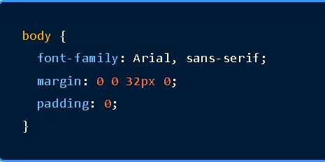
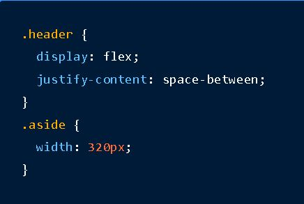
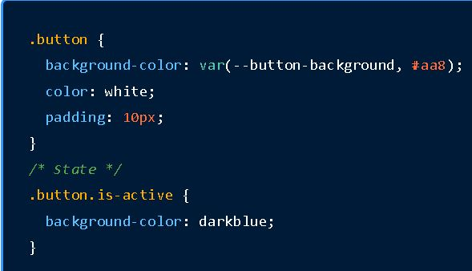
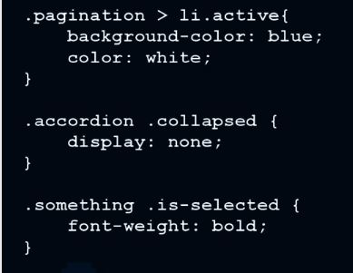
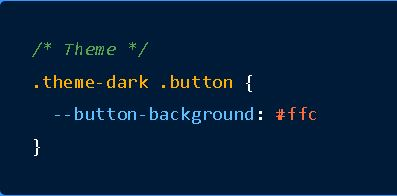

SMACSS
(Scalable and Modular Architecture for CSS)
SMACSS son las siglas de Scalable and Modular Architecture for CSS una metodología que permite organizar el CSS de manera modular y escalable, mejorando la mantenibilidad y el trabajo en equipo. En proyectos grandes, donde los estilos suelen crecer y crecer, SMACSS ayuda a reducir la complejidad y a mantener el código legible y organizado, además de consistente a lo largo de todo el proyecto y todas las prácticas de los desarrolladores.

Categorías de SMACSS
La idea de esta arquitectura no es mezclar código de varias categorías en un solo archivo. El propósito de esta categorización es codificar patrones, lo que se repite dentro de nuestro diseño.
La repetición significa menos código, mayor consistencia en la experiencia del usuario y facilidad en el mantenimiento.

BASE
La «Base» incluye reglas globales o reinicios de estilo que afectan directamente a elementos HTML estándar, como «body», «h1», «a», etc. Estas reglas sirven para crear una forma estándar para todo el proyecto, de modo común, lo que permite crecer de manera uniforme. Por ejemplo, puedes definir una tipografía o un esquema de color, espaciados comunes a distintos tipos de elementos, tamaño de línea, etc.
LAYOUT
Los estilos de «Layout» definen la estructura general de las páginas. Esto es, la disposición de las secciones principales de maquetación, como encabezados, pies de página y contenedores principales. Estos estilos organizan el contenido en un nivel superior y ayudan a mantener la consistencia estructural del sitio.
MÓDULOS
Dentro de los «Módulos» encontramos los componentes reutilizables como botones, tarjetas y listas. Cada módulo es autónomo y tiene sus propios estilos que se repetirán cada vez que se incorpore en la página. Esto facilita su reutilización.
ESTADOS
Luego tenemos los «Estados» que se refieren a las variaciones o cambios dinámicos en la interfaz de usuario, como el estado «activo» de un botón, o cuando un campo de texto está deshabilitado o tiene un error, por poner algunos ejemplos. Estos estilos se definen por separado para mantener el control y la claridad, asegurando además que los cambios de estado de los elementos no afecten otros módulos o estilos más globales.
TEMAS
Por último, tenemos el «Tema», que son aquellos estilos que permiten personalizar el diseño de un proyecto cambiando colores, fuentes u otros estilos visuales, de una manera centralizada. Los temas ayudan a mantener la coherencia visual y a aplicar variaciones estilísticas en diferentes contextos sin modificar la estructura o el comportamiento de los elementos de la página web.

Ventajas de usar SMACSS en proyectos grandes
-
Mantenimiento más sencillo y menos código duplicado
-
Mejor rendimiento y estructura escalable a largo plazo
-
Mayor flexibilidad en la personalización de la interfaz